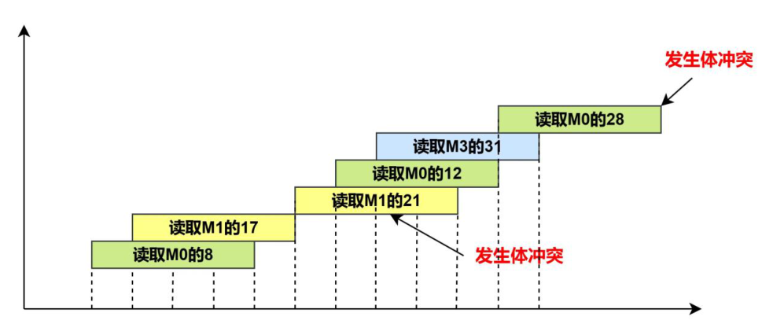
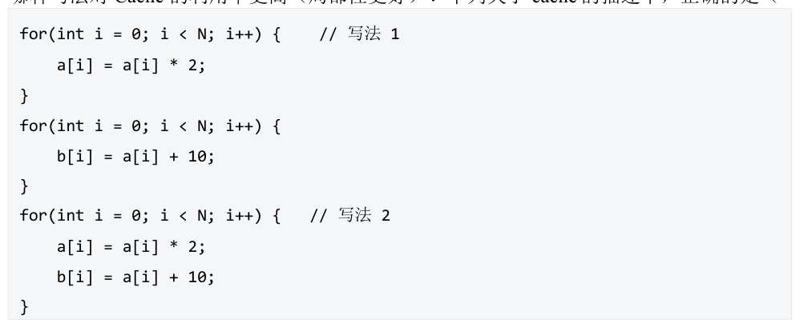
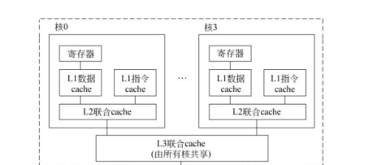
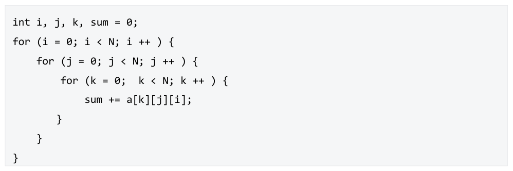
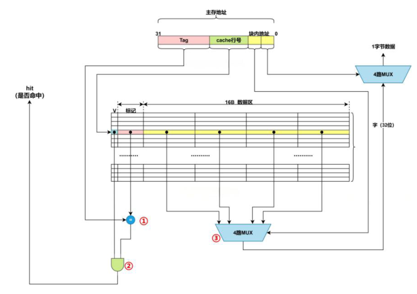
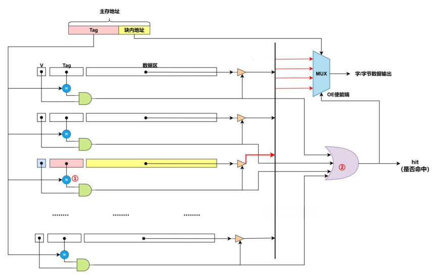
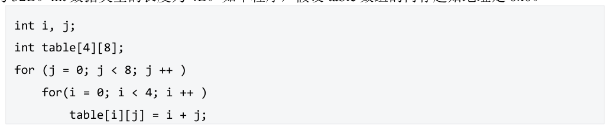
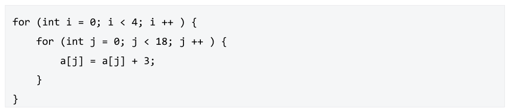

第 31 题
已知某DDR2 SDRAM 内存条的数据总线位宽为64 位（8B），在每个存储器总线时钟的上升沿和下降沿各传一次，其标称的最大理论数据带宽为6.4 GB/s，则下列关于该内存条参数的推断中，错误的是（）。
A． 该内存条存储器总线上的等效数据传输率（传送次数）为800M 次/秒 B． 芯片内部存储阵列的实际工作频率（核心频率）为400MHz C． 存储器总线的实际时钟频率为400MHz D． 该芯片内部I/O 缓冲采用了4 位（4n）数据预取技术，那么内部存储阵列一次预取的量是32B。 答案与解析 答案：B
A正确：根据公式带宽=等效传输率×数据位宽，可反推出等效传输率= 6.4GB/s/8B = 6400MB/s/8B = 800M 次/秒。 B 错误：等效传输率=核心频率×预取倍数，可反推出核心频率= 800M / 4 = 200MHz。 C 正确：由于双沿传输特性，总线时钟频率=等效传输率/ 2，即800M / 2 = 400MHz。 D 正确：预取技术是指存储器核心一次从存储阵列中取出多位数据，先放入内部缓冲区，然后再以更高的外部接口速率分多次送到数据总线上。这样可以在不显著提高存储阵列核心频率的情况下，提高外部数据传输率。DDR2 SDRAM芯片内部标准采用的是4位(4n)预取技术，所以存储阵列一次预取的量是32B，每次在数据总线传输8B 数据，这样就可以实现高速传输。
教材第 81 页 第 32 题
假定DDR3 SDRAM 芯片内部核心频率为133.25MHz，在每个存储器总线时钟的上升沿和下降沿各传一次，采用8 位预取技术，与之相连的存储器总线每次传输8B，则下面有关叙述中，错误的是 （）。
A． 芯片内部I/O 缓冲64B B． 存储器总线每秒传1066M 次数据 C． 存储器总线的时钟频率为1066MHz D． 存储器总线的带宽大约为8.5GB/s 答案与解析 答案：C
A 正确，DDR3 SDRAM芯片内部I/O 缓冲采用8 位预取技术，即内部存储阵列一次取出够总线传输8 次的数据量放在I/O 缓冲，I/O 缓冲大小为8×8B=64B。B 正确，芯片内部核心频率是指每秒内存储阵列往I/O 缓存放数据的频率，所以存储总线实际传输数据的频率为核心频率× 预取位数n ，故存储器总线每秒传送数据的次数为133.25M×8=1066M，其带宽为1066M× 8B≈8.5GB/S，D也正确。因为存储器总线每个时钟周期传送两次数据，所以存储器总线时钟频率为1066M/2=533MHz。综上所述，答案为选项C。
教材第 81 页 第 33 题
多模块存储器所以能高速进行读/写，是因为（ ）。
A． 采用了高速元器件 B． 各模块有独立的读写电路 C． 采用了信息预读技术 D． 模块内各单元地址连续 答案与解析 答案：B
多模块存储器本质上是一种空间并行技术。为了能够实现多个存储体同时或流水线式的高速读写，其硬件基础就在于各存储模块均具有各自独立的地址寄存器、数据寄存器和读写控制电路。
教材第 81 页 第 34 题
某计算机使用4 体低位交叉编址存储器，存取周期T = 80ns，总线启动访问间隔Δt = 20ns。在存储器总线上出现的主存地址（十进制）序列为8005，8006，8007，8008，8001，8002，8003，8004， 8000，则总存取时间是（ ）。（到最后一次存取的存取周期结束为止）
A． 240ns B． 280ns C． 300ns D． 720ns 答案与解析 答案：C
根据访问地址求出访问存储体体号序列（地址% 4）：1，2，3，0，1，2，3， 0，0。可发现只有最后访问8004和8000时发生了体冲突，即：体1：0ns→80ns（首次启动）体2：20ns→100ns（间隔Δt）体3：40ns→120ns（间隔Δt）体0：60ns→140ns（间隔Δt）体1：80ns→160ns（距首次启动80ns，满足T）体2：100ns→180ns（距首次启动80ns）体3：120ns→200ns（距首次启动80ns）体0：140ns→220ns（距首次启动80ns）体0：220ns→300ns（距上一次体0启动140ns→220ns，间隔80ns）最后一个访问（第9个地址，体0）的完成时间为300 ns，C正确。
教材第 82 页 第 35 题
一个八体低位交叉存储器，每个存储体的容量为256M×64 位，若每个体的存储周期为80ns，那么该存储器能提供的最大带宽是（）。
A． 426.67MB/s B． 800MB/s C． 213.33MB/s D． 400MB/s 答案与解析 答案：B
八体低位交叉存储器最大带宽时即完全流水线化，一个周期可访问8 个存储体。每个存储体的容量为256M×64位，一个存储体一次传输64位数据即8B，带宽为8B×8/80ns= 800MB/s。
教材第 82 页 第 36 题
某计算机主存采用4 体低位交叉编址结构，且总线和存储器支持突发传送。设总线传输周期为r ，每个存储模块的存取周期T=4r。在程序执行过程中，CPU 依次发出六个主存地址（十进制）的访存请求序列为：8, 17, 21, 12, 31, 28。忽略其他开销，假设第一个请求在第1 个总线周期发出，则该序列中会发生体冲突的访存地址有（）。
A． 21 、12 B． 21 、28 C． 12 、28 D． 21、12 、28 答案与解析 答案：B
第一步，先对所有地址取模（地址mod 4），地址序列[8,17, 21, 12, 31, 28]对应的体号序列为：[0, 1, 1, 0, 3, 0]。 【陷阱预警（静态窗口法易错点）】如果只用眼睛扫，看哪些相同体号的间隔小于4： 21(体号1)和17(体号1)挨着，间隔为1 ->21冲突。 12(体号0)和8(体号0)间隔为3 ->12冲突。 28(体号0)和12(体号0)间隔为2 ->28冲突。按照这个错误逻辑会错选D。记住，前一次冲突引发的流水线停顿，会改变后续所有指令的发射时间。（这个跟14年计组大题44题（4）中为什么指令1 的执行不会因为与指令5 的数据相关而发生阻塞这一问有异曲同工之妙）为了绝对严谨，我们按照总线周期（设为r）一步步往后推。一个模块一旦启动，将占据4个周期（例如第1周期启动，第1、2、3、4周期忙碌，第5周期恢复空闲）。因此在这六次访存中，只有地址21和地址28在试图发出时遭遇了模块忙碌，从而发生了体冲突。

教材第 82 页 第 37 题
假定采用多模块交叉存储器组织方式，存储器芯片和总线支持突发传送，CPU 通过存储器总线读取数据的过程为：发送首地址和读命令需1 个时钟周期，存储器准备第一个数据需8 个时钟周期，随后每个时钟周期总线上传送1 个数据，可连续传送8 个数据。若主存和cache 之间交换的主存块大小为64B，存储宽度和总线宽度都为8B，则cache 的一次缺失损失（缺失开销）至少为（ ）个时钟周期。
A． 33 B． 20 C． 17 D． 65 答案与解析 答案：C
一次缺失需要从主存读取一个主存块（64B)，每个突发传送总线事务可以读取8B*8，因此需要一个突发传送总线事务。每个突发传送总线事务所用时间为1+8+8=17 个时钟周期。
教材第 82 页 第 38 题
磁盘的平均存取时间包括（ ）。
A． 寻道时间和旋转延迟时间 B． 寻道时间和数据传输时间 C． 旋转延迟时间和数据传输时间 D． 寻道时间、旋转延迟时间和数据传输时间 答案与解析 答案：D
磁盘的平均存取时间是指从发出读写请求到数据开始传输或传输结束所需要的平均时间，包括寻道时间（磁头移动到目标磁道的时间）、旋转延迟时间（盘片旋转使目标扇区移动到磁头下方的时间）和数据传输时间（数据在磁盘和内存之间传输的时间），D正确。
教材第 82 页 第 39 题
关于多模块存储器，以下叙述正确的是（ ）。
A． 低位交叉编址在稳定流水线状态下，带宽随模块数m 的增加可以无限提升，模块越多越好 B． 突发传送是多模块交叉存储器的专属功能，单颗DRAM 芯片自身不支持突发传送 C． 高位交叉编址中，由于程序的空间局部性，CPU 连续访问的地址往往集中在同一模块，导致该模块成为热点，其余模块大量空闲，无法体现多体并行的优势 D． 低位交叉编址通过缩短每个存储模块的存取周期来提高存储器带宽 答案与解析 答案：C
A错：稳定流水线带宽上限=字长/r（总线传输周期），一旦m ≥T/r，继续增加m带宽不再提升，反而增加硬件成本和设计复杂度。 B错：单颗SDRAM芯片本身就支持突发传送，原因是芯片内部有行缓冲区——激活一行后，同一行内的数据可以在每个时钟周期连续读出，无需重复发送地址。突发传送与交叉编址无必然关系。 C正确：高位交叉编址（连续编址）中，相邻地址位于同一个模块，程序空间局部性恰好导致频繁访问集中于少数模块，其他模块闲置，完全失去多体并行优势。这是高位交叉仅适合容量扩展、不适合性能提升的根本原因。 D错：低位交叉编址不改变单个模块的存取时间T，而是利用多体流水线并行工作（空间并行技术）来提高整体吞吐率。
教材第 82 页 第 40 题
固态硬盘采用的存储介质是（ ）。
A． 磁性材料 B． 半导体闪存芯片 C． 光盘片 D． 磁鼓 答案与解析 答案：B
固态硬盘（SSD）使用半导体闪存芯片作为存储介质，存储和读取数据；磁性材料用于传统的磁表面存储器如硬盘、磁带；光盘片是光盘的存储介质；磁鼓也是磁表面存储器，A、 C、D错误。
教材第 82 页 第 41 题
下列关于固态硬盘SSD 的说法中，正确的是（ ）。
A． 固态硬盘属于磁表面存储器 B． 固态硬盘的闪存翻译层相当于磁盘中的磁盘控制器，起到地址转换的作用 C． 固态硬盘的随机读时延远低于常规硬盘，但随机写时延和常规硬盘的相差不大 D． 在对固态硬盘的某块写入信息时，不必按照块内页的顺序写入信息 答案与解析 答案：B
固态硬盘基于闪存技术，不属于磁表面存储器，选项A 错误。闪存翻译层可将CPU的逻辑磁盘块读/写请求转化为对底层SSD物理设备的读/写控制信号，选项B 正确。（闪存翻译层是运行在SSD 控制器内部的软件/固件，核心作用是地址转换（将逻辑块地址LBA映射为物理页号PPN）、垃圾回收和磨损均衡）固态硬盘无论是读还是写，速度都远快于常规硬盘。只不过对于SSD，写比读要慢，因为涉及擦除和磨损均衡。选项C 错误。固态硬盘块内的页必须按顺序写入信息，选项D错误。
教材第 82 页 第 42 题
下列关于固态硬盘（SSD）的说法中，错误的是（ ）。
A． 固态硬盘抗震性强、受机械震动影响较小，更适合移动设备使用。 B． 固态硬盘的磨损均衡技术中，动态磨损均衡比静态磨损均衡技术更先进、表现更优秀。 C． 固态硬盘的数据存储于Flash 芯片之中。 D． 机械硬盘使用的硬盘调度算法不一定适用于固态硬盘。 答案与解析 答案：B
静态磨损均衡技术比动态更先进、更优秀； SSD损均衡技术大致分为两种： • 动态磨损均衡。写入数据时，优先选择擦除次数少的新闪存块。老的闪存块先歇一歇。静态磨损均衡。这种技术更为先进，就算没有数据写入，SSD也会监测并自动进行数据分配， • 让老的闪存块承担以读为主的存储任务。同时让较新的闪存块腾出空间，以承担更多以写为主的存储任务。如此一来，各闪存块的寿命损耗就都差不多。
教材第 82 页 第 43 题
下列关于固态硬盘SSD 的说法中，正确的有（ ）。
A． I、II B． I、II、III C． I、II、IV D． II、III、IV 答案与解析 答案：A
Ⅰ正确，固态硬盘基于闪存技术。 Ⅱ正确，固态硬盘以页为读写单位，只有在一页所属的块整个被擦除后，才能对这一页进行写入。 Ⅲ错误，固态硬盘的读写性能优于机械硬盘，但是固态硬盘的NAND闪存中的块有擦写次数限制，其使用寿命一般短于机械硬盘。 Ⅳ错误，Ⅳ描述的是动态磨损均衡，而在静态磨损均衡中，会对数据块进行检测，尽可能保证各块写入和擦除均衡，并非是每次写入都选择长期存放数据而很少擦写的块。
教材第 83 页 第 44 题
下列关于固态硬盘(SSD)的叙述中，不正确的是（ ）。
A． 固态硬盘的读写是以页为单位的 B． 固态硬盘的擦除是以页为单位的 C． 固态硬盘的写入速度比读取速度慢很多 D． 固态硬盘的写入次数有限，引入磨损均衡可以延长使用寿命 答案与解析 答案：B
读写以页为单位，擦除以块为单位。随机写的速度比读慢，原因如下：
教材第 83 页 第 45 题
给定两个长度为N 的一维数组a 和b（N 极大，远远超过Cache 容量），针对以下两种代码写法，哪种写法对Cache 的利用率更高（局部性更好）？下列关于cache 的描述中，正确的是（ ）。

A． 写法1 更好，它把不同的操作分开了，指令的时间局部性更好 B． 写法1 更好，它对数组a 的访问具有更好的空间局部性 C． 写法2 更好，它显著提升了数组a 的时间局部性 D． 写法2 更好，它显著提升了数组b 的空间局部性 答案与解析 答案：C
数组长度N极大，超过Cache容量，这意味着数组会被不断挤出Cache。写法1：第一个循环遍历了整个数组a，第二个循环又重新从头遍历数组a去算b。当第二个循环要用a[0]时，a[0]早就因为Cache容量不够被后面的a[99999]替换出去了，必须重新从主存读！写法2：在一个循环体内，刚刚算完a[i]（此时a[i]还在Cache里，热乎着呢），紧接着下一句就立刻使用a[i]去算b[i]。结论：对同一个元素a[i]的两次访问在时间上被拉到了最近。这是非常典型地通过修改代码逻辑来提升时间局部性的操作，所以选C。
教材第 83 页 第 46 题
下列关于cache 的描述中，正确的是（ ）。
A． cache 行越大越好，这样可以提高cache 命中率 B． 直接映射方式无需考虑替换方式 C． cache 可以看作内存的扩充 D． 在多级cache 系统中，主存侧的cache 通常将指令和数据分开，用两个cache 存储 答案与解析 答案：B
A 错误，cache 行并不是越大越好，因为缺失时，从主存读一个数据更大的块需要消耗更多时间，其次，虽然增大cache 块可以更好利用空间局部性，但cache 行变大，容量不变的情况下，行数变少，因而要替换的可能性增加，命中的可能性不一定增加。 B 正确，直接映射方式下，一个给定的主存地址映射到固定的cache 行，若不命中，直接将该行数据替换，无需考虑替换算法。 C 错误，cache 仅仅是内存的拷贝，无法拓展不同的数据，所以无法扩充内存，扩充内存的方式一般指的是虚拟存储器。 D错误，CPU侧的cache通常指令和数据分开，这样方便并行读取数据和指令 （流水线中），若缺失，再从靠近内存侧的cache 读入靠近CPU 侧的cache。

教材第 83 页 第 47 题
已知cache-主存系统效率（cache 命中访问时间/平均访问时间）为85%，平均访问时间为60ns， cache 比主存快4 倍，先访问cache，未命中再访问主存，则cache 命中率是（ ）。
A． 93.2% B． 95% C． 96.5% D． 98% 答案与解析 答案：C
先访问cache，未命中访问主存Tc=Ta×e=60ns×0.85=51ns（cache存取周期） cache 比主存快4倍，所以访问主存的时间Tm=51×5=255ns（主存存取周期）因为Ta=Tc+（1-H）×Tm=51ns+（1-H）×255ns=60ns所以命中率H=246/255=96.5%，C正确。
教材第 83 页 第 48 题
已知cache 命中率H=0.98，主存周期是cache 的4 倍，主存存取周期为200ns，先访问cache，未命中再访问主存，则cache-主存的效率为（ ）。
A． 92% B． 92.6% C． 95.4% D． 98% 答案与解析 答案：B
Tc=Tm/4=50ns平均访问时间Ta=Tc+（1-H）×Tm=50ns+（1-0.98）×200ns=54ns访问效率e=Tc/Ta=50ns/54ns×100%=92.6%，B正确。
教材第 84 页 第 49 题
对于下列代码，以下哪种改变使其具有更好的局部性（ ）。

A． 将第2 行与第3 行互换 B． 将第2 行与第4 行互换 C． 将第5 行改为：sum += a[i] [k] [j] ; D． 将第5 行改为：sum += a[j] [i] [k] ; 答案与解析 答案：B
最好的局部性即完全按地址存放顺序访问数组。B 改完后对数组a 的访问为顺序访问依次访问地址上连续的元素，故有更好的空间局部性。
教材第 84 页 第 50 题
一个计算机有cache、主存和用于虚拟存储的磁盘。若所访问的字在cache 中，则存取它只需20ns。若字在主存而不在cache 中，则需要60ns 将它装入cache，然后再从cache 存取。若字不在主存中，则需要12ns 将它由磁盘取来装入主存，再用60ns 将它复制到cache，最后从cache 存取。cache 命中率是0.9，主存命中率是0.6。那么此系统访问一个字的平均存取时间是（以ns 为单位）（ ）。
A． 18 B． 21.68 C． 22.8 D． 26.48 答案与解析 答案：D
因为cache命中率是0.9，所以访问90%的字的平均存取时间=20nsx0.9=18ns；又因为主存命中率是0.6，所以0.6×0.1的数据要从主存调入cache，然后再从cache存取，访问一个字的平均存取时间=0.6x0.1×（60ns+20ns）=4.8ns。0.4×0.1的数据要从磁盘调入主存，然后再调入cache，访问一个字的平均存取时间=0.4x0.1x（12ns+60ns+20ns）=3.68ns；此系统访问一个字的平均存取时间=18ns+4.8ns+3.68ns=26.48ns，D正确。
教材第 84 页 第 51 题
假定主存和cache 之间采用直接映射方式，块大小为16B。cache 的数据区容量为64KB，主存地址为32 位，按字节编址。下图为cache 的硬件实现示意图，下列说法中正确的是（ ）。

A． Ⅰ、Ⅲ、Ⅴ、Ⅵ B． Ⅰ、Ⅱ、Ⅲ C． Ⅱ、Ⅳ、Ⅴ、Ⅵ D． Ⅰ、Ⅲ、Ⅳ、Ⅵ 答案与解析 答案：A
Ⅰ.正确16B ，按字节编址，因此块内地址（Offset ）占主存块大小为log2 (16) = 4位。Cache数据区容量为64KB，共有64KB/16B = 4096行，因此Cache行号（Index）占log2 (4096) = 12 位。主存地址共32位，因此标记位（Tag）长度为32 - 12 - 4 = 16位。 Ⅱ错误：部件①确实是比较器，在直接映射中由于每个主存块只能映射到唯一的Cache行，每次只需比较1个Tag，因此该部件仅有1个。陷阱在于比较的位宽：比较器只需要对比主存地址中的Tag字段与Cache标记阵列中存储的Tag，因此它的位宽应与Tag长度一致，即16位，而不是32位。 Ⅲ正确：部件②是与门。Cache命中的严格物理条件是：Tag匹配成功且该行的有效位（ValidBit）为1。两者同时满足，与门输出高电平（1），产生Hit信号。 Ⅳ错误：部件③是一个4路选择器，其作用是从命中的16B Cache行（包含4个32位的字）中，选出CPU需要的那1个字（4B）。从4个字中选择1个，需要2位控制信号。这2位信号来自块内地址（4位，设为[3:0]）。其中，低2bit [1:0]用于字内字节选择，而高2bit [3:2]才用于字选择（Word Offset）。因此控制信号应来自块内地址的高2bit。
教材第 84 页 第 52 题
假定主存和Cache 之间采用全相联映射，块大小为512B，按字节编址。Cache 数据区容量为8KB，主存地址空间为1MB。下图为该Cache 的硬件实现示意图，针对CPU 访问主存单元0240CH 的过程及硬件逻辑，下列说法中正确的是（）

A． Ⅰ、Ⅲ、Ⅴ B． Ⅰ、Ⅱ、Ⅳ C． Ⅱ、Ⅲ、Ⅴ D． Ⅰ、Ⅳ、Ⅴ 答案与解析 答案：B
Ⅰ.正确：相比于直接映射和组相联，全相联映射最大的特点就是极其灵活。主存中的任意一块可以存放在Cache的任何一个空闲位置，因此在Cache完全填满之前，绝对不会发生因位置冲突导致的替换（冲突缺失）。
教材第 85 页 第 53 题
假定主存和Cache 之间采用2 路组相联映射，块大小为512B，采用字节编址。Cache 数据区容量为8KB，主存地址空间为1MB。下图为该Cache的硬件实现示意图，针对CPU访问主存单元0240CH 的过程及底层硬件逻辑，下列说法中正确的是（ ）。
A． Ⅰ、Ⅲ、Ⅴ B． Ⅰ、Ⅱ、Ⅲ C． Ⅱ、Ⅳ、Ⅴ D． Ⅰ、Ⅲ、Ⅳ 答案与解析 答案：A
Ⅰ.正确：主存1MB = 2^20B，主存地址为20位。块大小512B = 2^9B，因此块内地址占9位。计算Cache组数：Cache数据区8KB，共8192 / 512 = 16个块。采用2路组相联，分为16 / 2 = 8组。因此组号占log_2(8) = 3位。标记位Tag = 20 - 3 - 9 = 8位。拆解0240CH：将十六进制0240CH展开为20位二进制：0000 0010 0100 0000 1100。低9位为块内地址：0 0000 1100 (0x00C)；中间3位为组号：010 (十进制的2)；高8位为Tag：0000 0010 (0x02)；因此，映射的Cache组号确实为2。 Ⅱ错误。前半句正确，2路组相联确实需要2个比较器（部件③）同时进行并行比较。陷阱在于比较的位宽：比较器只负责比较Tag字段。既然前面算出了Tag是8位，那么存储在Cache标记阵列中的Tag也是8位。因此，比较器的位宽必须是8位，而不是完整主存地址的20位。 Ⅲ正确。部件②是或门。2路组相联中，一个主存块可能存放在这2路中的任意一路。只要路0或路1中有任意一个Hit（Tag相等AND有效位为1），整个Cache就视作命中，或门输出1。 Ⅳ错误。底部的MUX负责从整整512B的块中，“挑”出CPU真正要读写的那个字或字节。陷阱在于控制信号：决定读哪一个字节的是主存地址中的“块内地址（Block Offset）”，而不是“组号”。组号早就用在上面寻找Cache行了。 Ⅴ正确。部件①是三态门。两路的数据线最终汇聚在同一根总线上，不能同时输出，否则会发生短路冲突。三态门就像个水龙头，只有命中那一路的“水龙头”会被打开（与门输出1），将其数据放行到后续的MUX。
教材第 85 页 第 54 题
一个32 位系统，系统中有一个数据容量为128B 的2 路组相连联映射cache，每个cache 块的大小为32B。int 数据类型的长度为4B。如下程序，假设table 数组的内存起始地址是0x0。 table 中元素的访问，cache 缺失率为（ ）。

A． 1 B． 1/4 C． 1/8 D． 1/16 答案与解析 答案：C
一个cache 块可以容纳32/4=8 个int 元素，table 中元素的访问情况如下，m 表示miss，h 表示hit。 m h h h h h h hm h h h h h h hm h h h h h h hm h h h h h h hMiss rate = 1/8
教材第 86 页 第 55 题
某计算机主存容量4GB，按字节编址。Cache 采用二路组相联映射方式，共有1024 行，若主存地址中标记位字段长度为12，则Cache 块大小是（ ）。
A． 512B B． 1KB C． 2KB D． 4KB 答案与解析 答案：C
计算机主存容量4GB，按字节编址，故主存地址共32位。二路组相联每组包含2行，Cache共有1024行，故组数为512组，组号字段共9位，标记位字段为12位，故块内偏移量字段共11位，Cache块大小为211 = 2KB，C正确。
教材第 86 页 第 56 题
在某系统中，按字节编址。cache数据容量为64B，主存大小是cache数据容量的256倍，cache行大小是8B，采用2 路组相连映射、LRU 替换算法及直写法。有如下c 语言程序段：数组a 中都是int型数据，数组长度为18，每个int 型数据占4B，假定数组a 在主存中是从00000000H 开始连续存储，该程序段执行前cache 为空，则该程序段执行过程中访问数组a 的cache 缺失率是（ ）。

A． 7.5% B． 25% C． 12.5% D． 15% 答案与解析 答案：C
数组占用0~8 共9 个块，第1 轮cache 映射情况，cache 分为4 个组（组0、1、 2、3）。其中组0 包含块0，4，组1 包含块1，5，组2 包括块2，6，组3 包括块3，7，当块8 访问时候，根据LRU 替换算法，块0 被替换出去，第一轮中每块第一个元素访问全部缺失共9 次。第2、3、 4 轮组1、2、3 中的块在重复访问时都命中，只有组0 内的块在块0 访问的时候，此时cache 中包含块8和块4，块0 缺失替换出块4，后续访问块4 和块8 时也分别缺失。每轮中0、4、8 依次缺失替换，共计3 次，所以缺失次数是9+3+3+3=18 次。总访问次数是4*18*2=144 次（每个元素每次读写共两次，共4 轮），所以缺失率是18/144=1/8，答案选C。
教材第 87 页 第 57 题
假定主存地址位数为32位，按字节编址，主存和cache之间采用直接映射方式，主存块大小为1 个字，每字32 位，写操作时采用回写方式，则能存放32K 字数据的cache 总容量至少应有（ ）位。
A． 1504K B． 1536K C． 1568K D． 1600K 答案与解析 答案：C
cache 行数为32K/1=32K 行，直接映射方式下，需要15 位来表示行号；主存块大小为32bit，按字节编址，块内地址计2 位；tag 位数=32-15-2=15bit，有效位和修改位（脏位）各1bit，所以cache 每行需要15+1+1+32=49bit，cache 总容量=49×32K=1568K。
教材第 87 页 第 58 题
假定某个计算机的内存地址空间为64M，按字节编址，其数据cache 有8 个cache 行，主存块块长64B，采用回写（Write Back）方式和随机替换策略，若cache 总容量为532B，则cache 最可能采用的映射方式为（）。 ），cache 中比较器的数量为（
A． 直接映射，1 个 B． 组相联映射，4 个 C． 组相连映射，2 个 D． 全相联映射，1 个 答案与解析 答案：C
内存地址空间为64M=2^26，物理地址为26 位。按字节编址，主存块长64B，块内地址为6bit。cache 数据容量8 * 64B=512B，标记阵列容量为532-512=20B，一共8 行，每行的标记信息一共20bit，回写方式需要1bit 脏位，另外1bit 有效位，因此tag 位为20-1-1=18bit。因此可以知道组号位数为26-18-6=2bit，可知该cache 采用8/2^2=2 路组相联。比较器数量为2.答案选C。关于cache 比较器个数记忆：k 路组相联就有k 个比较器。假设一个cache 有n 行 • 直接映射可看作n 组1 路组相联，1 个比较器 • k 路组相联映射为n/k 组k 路组相联，k 个比较器全相联可看作1 组n 路组相联，n 个比较器 •
教材第 87 页 第 59 题
在指令存储器设置一个容量为1KB 的cache，采用4 路组相联，每块2 个字（字长16bit），按字节编址。其cache 中选出命中的行（如果存在）需要几个多路选择器以及每个多路选择器需要几位来控制（）。
A． 1 个多路选择器，每个多路选择器需要4bit 用于控制 B． 4 个多路选择器，每个多路选择器需要2bit 用于控制 C． 1 个多路选择器，每个多路选择器需要2bit 用于控制 D． 4 个多路选择器，每个多路选择器需要4bit 用于控制 答案与解析 答案：C
由于cache采用4路组相联，所以cache中有4个比较器，比较后通过一个多路选择器选择出一个块，每组有四个块，所以用2bit控制多路选择。实现一个四路组相联的cache需要四个比较器和一个4选1的多路选择器来判断被选中的组中哪一个单元与标记匹配。
教材第 87 页 第 60 题
某32 位计算机的cache 容量为16KB，按字节编址，cache 行的大小为16B，若主存与cache 地址映像采用直接映像方式，则主存地址为0x1234E8F8 的单元装入cache 的地址是（ ）。
A． 00010001001101 B． 11010011101000 C． 01000100011010 D． 10100011111000 答案与解析 答案：D
cache 地址总共为14 位，最后4 位是块内偏移量，所以和主存地址的最后4 位一样。由于采用直接映射，主存地址的最后14 位，就是对应在cache 的地址。
教材第 87 页